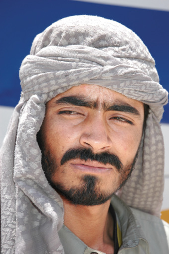

5 PORTRE
PAKİSTAN, 23 TEMMUZ
Ali, çölü geçmek için bindiğimiz otobüsün muavini. Başında sarılı koca kumaş parçası, esmer yüzü ve kirli sakalıyla benim burada yazarak anlatamayacağım kadar çöl insanlarına benziyor. Portre çekmeye çalışıyorum. Tam sergilik. Önce İnci çekiyor ikimizi, ama sanki fotoğraf makinesinin İnci’de olmasından çok memnun değil. Sonra ben alıyorum makineyi. Daha önce bu işi yapmış gibi bir hali var. Çeşitli pozlar takınıyor. Otobüsün üzerinde ormandaki Tarzan, buzdaki kutup ayısı, denizdeki yunus kadar rahat. En az beş kere yeniden düzenledi otobüsün çatısını.
Bizim bisikletlerde oradan oraya gitti geldi. Bazen yan yattılar bazen lastikleri üzerinde dik durumda durdular. En sonunda çok sayıda ayakkabı kutusunun üstüne yerleştirildi bisikletler. Ben bisikletin yerinin değiştiği her seferde maymun gibi tırmanıp otobüsün tepesine çıkıyorum. Ali’de bana iki eliyle “sakin sakin” diye işaret ediyor. İngilizcesi yok ama hareketleriyle karışma, endişelenme, halledeceğim bana bırak, bana güven gibisinden hareketler yapıyor.
En son branda geriyor tüm bagajların üstüne. Kalın halatlarla da bağlıyor. Sanırsın bir hafta sürecek yolculuk. Bütün bu işleri tek başına yapıveriyor. Ben sadece ayak bağı oluyorum adama. Otobüs neredeyse iki kat oldu. Yolcuların ellerinde su şişeleri ve termoslar…
Muavin Ali, otobüs yolculuğumuz boyunca, bizim oturduğumuz en arka koltuğa geliyor, ayaklarımızın altında ızgara şeklindeki açıklığa koku sıkıp gidiyor. Bu ızgaralı bölüme çanta koymamamızı ve üzerine basmamamızı söylüyor. Yine gülümsüyor. Yine işini iyi yapan, kontrolü elinde bulunduran insan duruşunu takınmış. Acayip bir çalışkanlık, pratiklik, kargaşa içinde bir düzeni var.
Pakistan’ın kuş uçmaz kervan geçmez çölünde Kant’ın görev ahlakına rastladık desem abartmış olmayacağım.

Pakistan, Quetta
“Hûda Hafız”, Ali